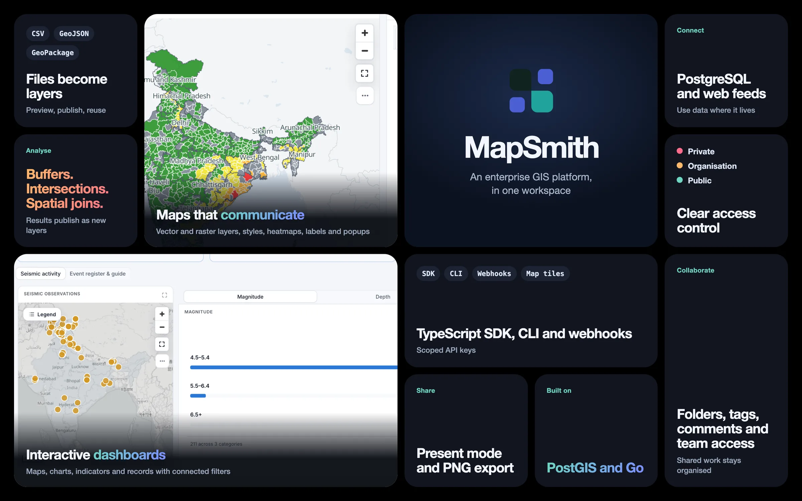

MapSmith / Enterprise GIS
An enterprise GIS platform for shared spatial work
I built MapSmith to bring spatial data and the work people do with it into one place. Teams can publish data, run analysis and share the results in maps or dashboards.
Working platform with public examples
Visit MapSmith ↗
The story
Why I built it.
I came to GIS through forest operations. That work showed me how much specialist effort a GIS workflow could take. I started MapSmith in May 2026 to put those steps in one workspace. I used earthquake data to demonstrate how to import records, style a map and assemble a dashboard with connected filters. I also used the demo to show who could see what. Friends and people in the GIS community did some early testing. There’s now a public earthquake dashboard that you can explore without an account.
The problem
What it solves.
Publishing a layer can be one job and analysing it another. When those steps happen in separate tools, a team also has to move data and manage access as it prepares results for other people.
Who it’s for: GIS teams, operations teams and developers working with spatial data.
Workflow
How MapSmith works.
- 01Publish a layerImport a location file or connect a supported source and publish the data for reuse.
- 02Analyse and mapRun a spatial operation and use its output as a layer on a map.
- 03Share the resultsBuild a dashboard with connected filters and choose who can see it.
Engineering
Decisions and limits.
I built the platform on PostGIS and use a Go service layer for spatial operations. Analysis results can be published as layers and reused in maps or dashboards. A TypeScript SDK and CLI expose platform operations for developers.
The product is working and there are public examples to explore. Natural-language tools for creating maps and running analysis, and deeper integration with JurisField, are planned.
My role
What I built.
I founded MapSmith and handle its design, engineering and deployment myself.
- Development began in May 2026
- Access settings for private, organisation-wide and public content
- Public weather and earthquake dashboards
- Forest-fire monitoring and prevention is one of many use cases
Angular · Go · PostGIS · MapLibre · Keycloak · Docker